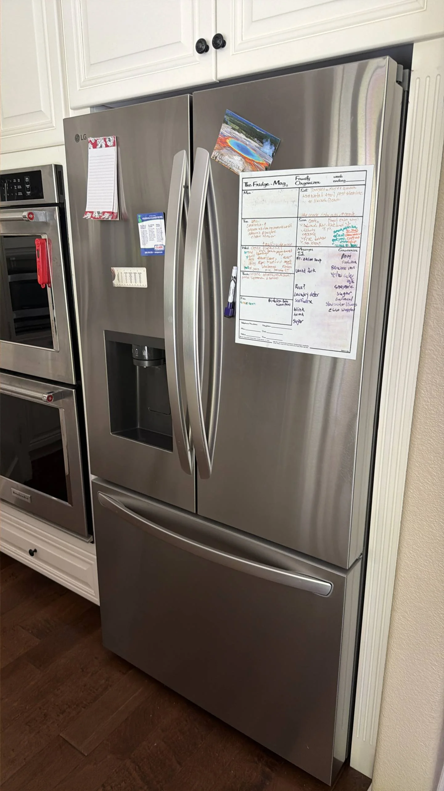

LG Refrigerator Leaks Water on the Floor — Possible Defrost Drain or Water Line Issues
Finding water leaking from an LG refrigerator onto the floor can be frustrating, especially when the appliance continues cooling normally. A small puddle beneath or in front of the refrigerator may seem like a minor inconvenience at first, but it often indicates that water is not draining or flowing as it should. In many cases, the problem is caused by a clogged defrost drain, a damaged water supply line, or another issue within the refrigerator's drainage or water delivery system. Addressing the leak early can help prevent damage to your flooring and avoid more extensive appliance repairs.
During normal operation, every LG refrigerator periodically enters an automatic defrost cycle. As frost melts from the evaporator coils, the water flows through a drain opening into a drain tube and eventually reaches a collection pan beneath the appliance, where it evaporates naturally. At the same time, models equipped with a water dispenser or ice maker use a separate water supply line to deliver fresh water throughout the refrigerator. If either of these systems develops a blockage, crack, or loose connection, water may begin leaking onto the kitchen floor.
One of the most common causes is a clogged defrost drain. Food particles, dust, ice, or debris can gradually block the drain opening, preventing melted water from flowing into the drain pan. Instead, the water backs up inside the freezer compartment and eventually spills onto the floor as the ice melts. In many cases, homeowners first notice ice forming beneath the freezer drawer before a visible puddle appears in front of the refrigerator.

A frozen defrost drain can produce similar symptoms. If the drain opening freezes shut, melted water has nowhere to go during the defrost cycle. As additional frost melts, water accumulates inside the freezer until it eventually overflows. Although manually removing the ice may temporarily stop the leak, the drain can freeze again if the underlying problem is not corrected.
A damaged or leaking water supply line is another frequent source of refrigerator leaks. LG refrigerators with built-in ice makers or water dispensers rely on plastic or braided water tubing connected to the household plumbing system. Over time, the tubing may develop cracks, become pinched, loosen at connection points, or wear from vibration. Even a small leak can gradually create a noticeable puddle beneath the refrigerator, especially after the water dispenser or ice maker has been used.
The water inlet valve should also be inspected during diagnosis. This electrically operated valve controls the flow of water into the refrigerator whenever the dispenser or ice maker requests it. If the valve housing cracks, internal seals wear out, or fittings become loose, water may slowly drip from the valve even when the refrigerator is not actively dispensing water. These leaks are often difficult to detect because they occur behind the appliance and may only become noticeable after water collects on the floor.
Problems with the water filter or filter housing can also result in leaks. If the filter is not installed correctly, becomes damaged, or fails to seal properly, water may escape whenever the dispenser or ice maker operates. Likewise, a cracked filter housing can allow water to leak continuously. In many cases, replacing the filter or properly reinstalling it resolves the issue, but damaged housings usually require replacement.
An overflowing or damaged drain pan is another possibility, although it is less common. The drain pan is designed to collect and evaporate water produced during normal defrost cycles. If the pan becomes cracked or is positioned incorrectly after the refrigerator has been moved, water may spill directly onto the floor instead of evaporating safely beneath the appliance.
Improper refrigerator installation can sometimes contribute to drainage problems. If the refrigerator is not level, water may fail to flow correctly toward the drain opening during the defrost cycle. Instead, it can collect inside the freezer compartment or overflow into other sections of the appliance. Ensuring the refrigerator is properly leveled helps maintain normal drainage and reduces the likelihood of recurring leaks.
Many homeowners simply wipe up the water and continue using the refrigerator, assuming the leak is temporary. However, recurring puddles usually indicate an ongoing problem that will not resolve without repair. Ignoring the leak can lead to water damage, mold growth, slippery floors, and additional stress on internal refrigerator components.
Several warning signs often accompany refrigerator water leaks. These include ice forming beneath the freezer drawer, water pooling inside the fresh food compartment, dripping sounds behind the refrigerator, reduced ice maker performance, water around the filter housing, or damp flooring near the rear of the appliance. Some LG models may also display diagnostic error codes if the leak is associated with certain water system failures.
Determining the exact source of a refrigerator leak often requires more than a visual inspection. Professional technicians examine the defrost drain, water supply tubing, inlet valve, drain pan, filter housing, and internal connections to identify the cause of the leak. They also inspect the refrigerator for hidden ice blockages or damaged components that may not be visible without partial disassembly.
To reduce the risk of future leaks, replace the water filter at the recommended intervals, inspect the external water line periodically for signs of wear, avoid pushing the refrigerator tightly against the wall where tubing may become pinched, and keep the drain system free from debris whenever routine maintenance is performed. These preventive measures help protect both the refrigerator and the surrounding kitchen area.
If your LG refrigerator leaks water on the floor, the issue should be investigated as soon as possible. A blocked defrost drain, frozen drain tube, leaking water line, faulty inlet valve, or damaged filter housing can all allow water to escape from the appliance. Professional diagnosis can pinpoint the exact source of the leak and restore proper operation before the problem causes additional damage to your refrigerator or home.